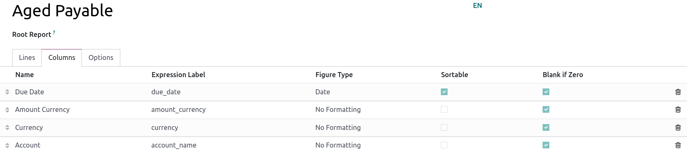

Custom reports¶
Odoo comes with a powerful and easy-to-use reporting framework. The engine allows you to create new reports, such as tax reports, or balance sheets and income statements with specific groupings and layouts.
Important
Activate the developer mode to access the accounting report creation interface.
To create a new report, go to . From here, you can either create a root report or a variant.

Root reports¶
Root reports can be regarded as generic, neutral accounting reports. They serve as models on which local accounting versions are built. If a report has no root report, it is considered to be a root report itself.
Example
A tax report for Belgium and the US would both use the same generic version as a base and adapt it for their domestic regulations.
When creating a new root report, you need to create a menu item for it. To do so, open the report and then, on that same report, click on . Refresh the page; the report is now available under .
Note
Cases that require creating a new root report are rare, such as when a country’s tax authorities require a new and specific type of report.

Variants¶
Variants are country-specific versions of root reports and, therefore, always refer to a root report. To create a variant, select a generic (root) report in the Root Report field when creating a new report.
When a root report is opened from one of the accounting app’s main menus, all its variants are displayed in the variant selector in the top right corner of the view.
Example
In the following image, VAT Report (BE) is the variant of the root Generic Tax report.

Lines¶
After having created a report (either root or variant), you need to fill it with lines. You can either create a new one by clicking on Add a line, or modify an existing line by clicking on it. All lines require a Name, and can have an optional additional Code (of your choice) if you wish to use their value in formulas.

Expressions¶
Each line can contain one or multiple expressions. Expressions can be seen as sub-variables needed by a report line. To create an expression, click on Add a line within a line report.
When creating an expression, you must attribute a label used to refer to that expression. Therefore, it has to be unique among the expressions of each line. Both a Computation Engine and a Formula must also be indicated. The engine defines how your formula(s) and subformula(s) are interpreted. It is possible to mix expressions using different computation engines under the same line if you need to.
Note
Depending on the engine, subformulas may also be required.
‘Odoo Domain’ engine¶
With this engine, a formula is interpreted as an Odoo domain
targeting account.move.line objects.
The subformula allows you to define how the move lines matching the domain are used to compute the value of the expression:
sumThe result is the sum of all the balances of the matched move lines.
sum_if_posThe result is the sum of all the balances of the matched move lines if this amount is positive. Otherwise, it is
0.sum_if_negThe result is the sum of all the balances of the matched move lines if this amount is negative. Otherwise, it is
0.count_rowsThe result is the number of sub-lines of this expression. If the parent line has a group-by value, this will correspond to the number of distinct grouping keys in the matched move lines. Otherwise, it will be the number of matched move lines.
You can also put a - sign at the beginning of the subformula to reverse the sign of the
result.
‘Aggregate Other Formulas’ engine¶
Use this engine when you need to perform arithmetic operations on the amounts obtained for other
expressions. Formulas here are composed of references to expressions separated by one of the four
basic arithmetic operators (addition +, subtraction -, division /, and multiplication *). To
refer to an expression, type in its parent line’s code followed by a period . and the
expression’s label (ex. code.label).
Subformulas can be one of the following:
if_above(CUR(amount))The value of the arithmetic expression will be returned only if it is greater than the provided bound. Otherwise, the result will be
0.if_below(CUR(amount))The value of the arithmetic expression will be returned only if it is lower than the provided bound. Otherwise, the result will be
0.if_between(CUR1(amount1), CUR2(amount2))The value of the arithmetic expression will be returned only if it is strictly between the provided bounds. Otherwise, it will be brought back to the closest bound.
if_other_expr_above(LINE_CODE.EXPRESSION_LABEL, CUR(amount))The value of the arithmetic expression will be returned only if the value of the expression denoted by the provided line code and expression label is greater than the provided bound. Otherwise, the result will be
0.if_other_expr_below(LINE_CODE.EXPRESSION_LABEL, CUR(amount))The value of the arithmetic expression will be returned only if the value of the expression denoted by the provided line code and expression label is lower than the provided bound. Otherwise, the result will be
0.
CUR is the currency code in capital letters, and amount is the amount of the bound expressed in
that currency.
You can also use the cross_report subformula to match an expression found in another report.
‘Prefix of Account Codes’ engine¶
This engine is used to match amounts made on accounts using the prefixes of these accounts’ codes as variables in an arithmetic expression.
Example
21Example
21 + 10 - 521
and 10, and subtracts the balance of the ones on accounts with the prefix 5.It is also possible to ignore a selection of sub-prefixes.
Example
21 + 10\(101, 102) - 5\(57)101, 102,
and 57.You can apply ‘sub-filtering’ on credits and debits using the C and D suffixes. In this
case, an account will only be considered if its prefix matches, and if the total balance of the
move lines made on this account is credit/debit.
Example
Account 210001 has a balance of -42 and account 210002 has a balance of 25. The formula
21D only matches the account 210002, and hence returns 25. 210001 is not matched, as its
balance is credit.
Prefix exclusions can be mixed with the C and D suffixes.
Example
21D + 10\(101, 102)C - 5\(57)21
if it is debit (D) and 10 if it is credit (C), but ignores prefixes 101, 102, and
subtracts the balance of the ones on accounts with the prefix 5, ignoring the prefix 57.To match the letter C or D in a prefix and not use it as a suffix, use an empty exclusion ().
Example
21D\()21D, regardless of their balance sign.In addition to using code prefixes to include accounts, you can also match them with account tags. This is especially useful, for example, if your country lacks a standardized chart of accounts, where the same prefix might be used for different purposes across companies.
Example
tag(25)If the tag you reference is defined in a data file, an xmlid can be used instead of the id.
Example
tag(my_module.my_tag)You can also use arithmetic expressions with tags, possibly combining them with prefix selections.
Example
tag(my_module.my_tag) + tag(42) + 1010C and D suffixes can be used in the same way with tags.
Example
tag(my_module.my_tag)CPrefix exclusion also works with tags.
Example
tag(my_module.my_tag)\(10)10.‘External Value’ engine¶
The ‘external value’ engine is used to refer to manual and carryover values. Those values
are not stored using account.move.line, but with account.report.external.value. Each of these
objects directly points to the expression it impacts, so very little needs to be done about their
selection here.
Formulas can be one of the following:
sumIf the result must be the sum of all the external values in the period.
most_recentIf the result must be the value of the latest external value in the period.
In addition, subformulas can be used in two ways:
rounding=XReplacing
Xwith a number instructs to round the amount to X decimals.editableIndicates this expression can be edited manually, triggering the display of an icon in the report, allowing the user to perform this action.
Note
Manual values are created at the date_to currently selected in the report.
Both subformulas can be mixed by separating them with a ;.
Example
editable;rounding=2‘Custom Python Function’ engine¶
This engine is a means for developers to introduce custom computation of expressions on a case-by-case basis. The formula is the name of a python function to call, and the subformula is a key to fetch in the dictionary returned by this function. Use it only if you are making a custom module of your own.
Columns¶
Reports can have an indefinite number of columns to display. Each column gets its values from the expressions declared on the lines. The field expression_label of the column gives the label of the expressions whose value is displayed. If a line has no expression in that field, then nothing is displayed for it in this column. If multiple columns are required, you must use different expression labels.
When using the period comparison feature found under the Options tab of an accounting report, all columns are repeated in and for each period.